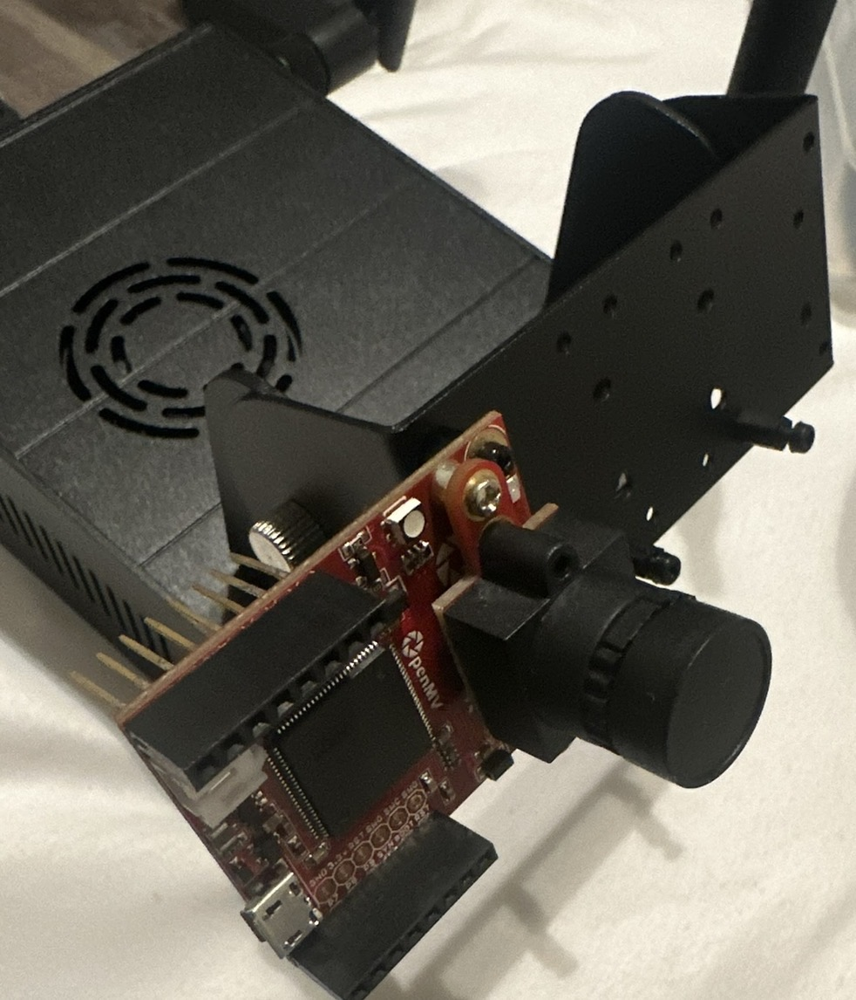

Portfolio
Here are a few projects that represent how I build: resource aware embedded systems,
reliable networking, and practical ML pipelines.
Featured Projects
Distributed ESP32 IoT Pager System

I designed and implemented a resource constrained embedded pager using an ESP32
(ESP IDF + FreeRTOS) to deliver real time notifications over WiFi.
The system included a Raspberry Pi Flask server (Python) that was securely exposed using ngrok,
plus ESP32 firmware for an OLED display (SSD1306), GPIO control, deep sleep power optimization,
and battery operation.
- ESP32 firmware: WiFi notifications + OLED UI + buzzer alerts
- Power: deep sleep strategy for battery friendly operation
- Reliability: tested across power cycles + reconnects; debugged I2C/WiFi/RTOS issues
- Integration: alerts when CV model training completes
Links:
ESP-IDF,
FreeRTOS,
Flask,
ngrok.
Automated Computer Vision System for Bolt Detection

Built an automated ML pipeline to classify industrial fasteners using Python, TensorFlow,
and OpenCV. Collected and labeled 5,000 images and trained multi class CNN models for
real world environments.
- Pipeline: training, logging, benchmarking automation
- Focus: accuracy vs speed vs resource constraints for realtime use
- Deployment target: constrained embedded hardware (Jetson Orin)
Links:
TensorFlow,
OpenCV,
NVIDIA Embedded.
Detection of Nuts and Bolts in Complex Environments (Research)
Contributed to a research effort focused on classification/detection of nuts and bolts.
Built and preprocessed a custom dataset, and worked with object detection models including
YOLOv8 and a custom TensorFlow pipeline.
- Compared YOLOv8 vs custom pipeline on speed/accuracy/efficiency trade offs
- Planned deployment on NVIDIA Jetson Orin
Links:
Ultralytics YOLO,
PyTorch.
More
I also use tools like Git/GitHub, GDB, Docker, Flask, and LTspice across projects and coursework.